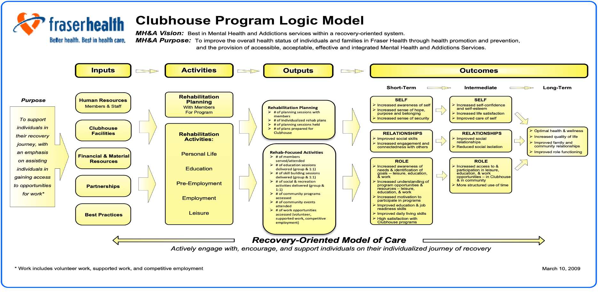
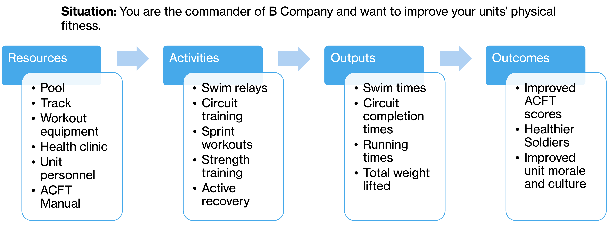
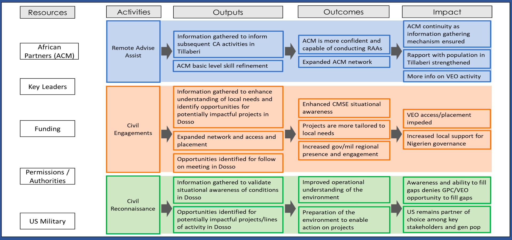

2 Logic Models
Recall in Section 1.4.2, the author noted that “the remedy that analysts must employ in the face of complexity, nonlinearity, and adaptation is theory.” Croft emphasizes that planners must articulate explicit assumptions and causal pathways to enable adaptive assessment and correction (2018).
Similarly, the Multi-Service Tactics, Techniques, and Procedures (MTTP) for Operation Assessment manual discusses the concept of theory of change and its critical role in assessment. The manual notes that assessment frameworks should be grounded in clearly stated theories of causation—explaining why and how inputs are expected to achieve desired end-states—and that these theories directly inform assessment techniques, indicators, and interpretation (Air Land Sea Space Application Center 2020, see Chapter II).
A review of broader literature highlights a foundational guide developed by the W.K. Kellogg Foundation, which introduced the concept of logic models. In the context of operational design, a logic model functions as a theory of change, explicitly depicting the hypothesized causal pathways and assumptions that underpin a campaign, operation, or program.
According to the W.K. Kellogg Foundation:
The program logic model is defined as a picture of how your organization does its work – the theory and assumptions underlying the program. A program logic model links outcomes (both short- and long-term) with program activities/processes and the theoretical assumptions/principles of the program (2004).
2.1 Motivating Problem
How to develop and implement the usage of logic models when framing a military assessment.
2.2 What We Will Learn
Logic Model Components
How to Use Logic Models in an Assessment Framework
2.3 Logic Model Components
A logic model visually and systematically represents how a program works. It links program resources, activities, outputs, and outcomes to clearly illustrate the relationships among the program’s elements and its intended results. Planners, implementers, and evaluators commonly use logic models to design, execute, assess, and communicate programs. By doing so, they promote shared understanding among stakeholders and establish accountability and clarity in measuring success.
2.3.1 Inputs (Resources)
Inputs refer to the foundational resources required to launch and sustain a program. These include human resources (such as staff, volunteers, or subject-matter experts), financial resources (budgets, grants, donations), material assets (equipment, facilities, supplies), and intangible assets (community partnerships, organizational reputation, data systems). Inputs are not outputs or results themselves, but they enable the program to function. A clear understanding of inputs is crucial for determining program feasibility and scope. Inputs also serve as a baseline for accountability, ensuring that there is alignment between investments and what the program aims to accomplish. The quality, availability, and appropriateness of these resources will significantly affect the program’s effectiveness and the plausibility of achieving desired outcomes. In short, inputs are the “raw materials” for program implementation.
2.3.2 Activities
Program staff carry out activities as the core processes or interventions using available inputs. These activities consist of the actual operations or services delivered to achieve the program’s objectives—such as conducting workshops, developing curricula, offering technical assistance, providing training, or running outreach campaigns. Designers typically express activities using action verbs to reflect what the program “does,” ensuring they align with the needs of the target population and the intended outcomes. These actions bridge resource use with measurable results (outputs and outcomes). To plan activities effectively, program designers must clearly understand the intervention’s logic—why they expect a particular activity to lead to change. During evaluations, analysts assess the fidelity and quality of activity implementation to determine whether the program or external factors produced the observed results.
2.3.3 Outputs
Outputs are the immediate, tangible products or deliverables resulting from a program’s activities. These are typically quantified and expressed in terms such as “number of participants trained,” “classes conducted,” or “manuals distributed.” Outputs do not reflect the impact or effectiveness of a program; instead, they indicate that the completion of activities as intended. Outputs are proxies for performance indicators during implementation to monitor progress and operational efficiency. While outputs alone do not demonstrate success, they are essential for program accountability and process evaluation. They also serve as a necessary precondition for achieving outcomes—no outcomes can occur without outputs, but outputs alone are not sufficient. By distinguishing between outputs and outcomes, program evaluators can avoid the common mistake of confusing effort with effect.
2.3.4 Outcomes
Outcomes represent the changes or benefits resulting from a program’s outputs. They can be short-term (changes in knowledge, attitudes, or skills), intermediate (changes in behavior, decision-making, or organizational practice), or long-term (changes in social, economic, or environmental conditions). Outcomes provide evidence of program effectiveness and are central to any meaningful evaluation. Unlike outputs, outcomes measure the value and impact of the program, not just completion, but achievement. Well-defined outcomes should be specific, measurable, realistic, and aligned with the program’s overall goals. They also must be attributable, at least in part, to the program’s activities and outputs. Importantly, outcomes are not always linear or guaranteed; they depend on various assumptions and external influences. Measuring outcomes helps organizations understand their value proposition and refine future strategies.
2.3.5 Impact
Programs aim to contribute to broad, long-term, and often societal-level changes known as impacts. These high-level effects include reducing poverty, improving public health, increasing economic stability, and advancing educational attainment. Organizations typically align impacts with their institutional missions or policy goals, recognizing that such changes often emerge years after a program concludes. Unlike more immediate and attributable outcomes, impacts result from a complex interplay of factors, many of which lie beyond the program’s control. Consequently, evaluators rarely attribute impacts directly to a single program; instead, they recognize the program’s contribution to broader change.
Measuring impact requires a long-term perspective and often involves partnerships with external evaluators, the use of secondary data, or follow-up studies. In logic models, impact serves as the north star, guiding the design and alignment of all prior components: activities, outputs, and outcomes. A strong logic model will show a plausible pathway from what the program does (activities) to what it achieves (outcomes) and ultimately how it contributes to impact. Being transparent about intended impact ensures that programs remain focused on meaningful change, rather than simply delivering services. It also helps communicate value to funders, stakeholders, and the broader public.
2.4 Practical Exercise
Using the Detroit Lions football framework introduced in Chapter 1, create a basic logic model that maps stakeholder goals (e.g., community engagement or player development) to inputs, activities, outputs, outcomes, and potential impact.
2.4.1 Example Logic Models
2.4.1.1 Health Care Provider

2.4.1.2 Military Unit Training

2.4.1.3 Civil Affairs Objective
